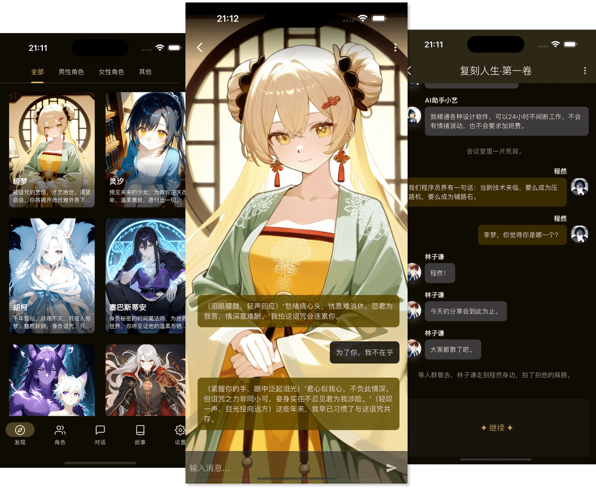
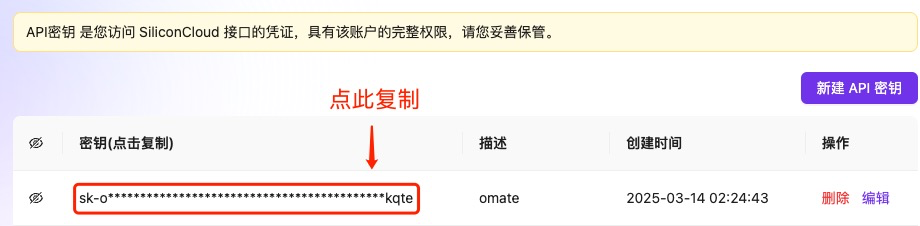
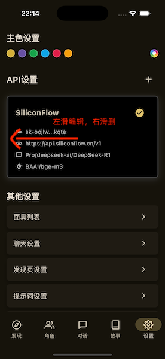

从零到聊上 AI 角色：OMate 五分钟上手指南
第一次接触 AI 角色聊天？OMate 是一款让你和自定义角色对话的轻量应用。本文从零讲清楚它是什么、怎么装、怎么配 API、以及上手先玩哪三个功能，小白也能五分钟跑通。
如果你之前从没碰过 AI 角色聊天类的软件，又好奇"和 AI 聊出专属人格到底是什么感觉"——这篇就是为你写的，不需要任何基础。我会用最直白的方式带你从下载到第一次对话跑通，全程不碰术语黑话。
它到底是干嘛的（一个生活化类比）
OMate 你可以把它理解成一个 AI 角色扮演客厅——它的官网上有完整的功能介绍和社区展示。你在里面可以"请"各种 AI 角色来坐——可能是一个毒舌但靠谱的程序员搭档，可能是一个温柔的日语老师，也可能是你自己编的某个世界观里的角色。这些角色有自己的性格、开场、说话风格，你和他们聊天时，AI 会按照设定好的人格来回应你，而不是千篇一律的通用回答。
和普通的大模型对话界面最大的区别是：普通对话每次都是"从零开始"，你得反复交代背景；OMate 的角色会记住你们聊过的内容——你说过的偏好、习惯、甚至你哪天提到过想换手机，下次再聊它都记得。这个"长期记忆"的能力是新手能感知到的最大差异。

五分钟上手：从下载到第一次跑通
好，不说虚的，直接带你走一遍最短路径。整个过程分四步，每一步我都会说清楚"你会看到什么"。
第一步：装应用
先把安装包从官方下载拿下来装到你的设备上。OMate 支持移动端和桌面端，挑你常用的就行——我自己是手机上用得最多，通勤碎片时间就能聊两句。
装完打开，你会看到一个角色列表页面，里面可能自带几个示例角色（比如一个通用助手），也可能是空的。别慌，空的才好——我们自己建一个。
第二步：配一个模型服务商
这步是新手最容易卡住的地方，但真的没那么难。OMate 本身不提供模型，你需要去外面找一家"模型服务商"（相当于 AI 引擎的加油站），注册拿到一把 API 密钥，再填进 OMate 里。
国内用户最省心的选择是硅基流动（SiliconFlow）——支持主流的开源模型，国内网络友好，注册还送试用 Token。流程就三步：
- 用手机号注册硅基流动账号
- 进控制台的 API 管理页面，点"创建新的 API Key"，给它起个好认的名字（比如"给 OMate 用的"）
- 创建出来那串以
sk-开头的字符只显示一次，立刻复制保存好

然后回 OMate：设置 → API 设置 → 添加新配置。把刚才复制的密钥粘进去，选一个你想用的模型（新手选默认推荐的就行），保存。搞定。
第三步：建一个自己的角色
回到角色页面，右上角点加号 → 新建角色。你会看到一堆字段，但其实只有几个是真的重要：
- 名称：角色叫啥，随便起
- 头像：选一张图，没有也能跳过
- 第一条消息：这个是精髓——它决定了角色第一次开口说什么。别只写"你好"，写点有场景感的，比如"你好呀，我是小岚，今天想聊点什么？"，AI 会顺着这个开场继续扮演
- 性格特点：写具体一点，比如"喜欢用幽默化解尴尬，面对陌生人有点慢热但熟了之后话多"，比空泛的"开朗"有用得多
- 系统提示词：给 AI 立规矩的地方，比如写"不要打破第四面墙"，AI 就不会突然跳出来说"我是个 AI 哦"
其他字段像对话示例、场景设定，等你玩熟了再慢慢调。先把这几个填完，保存。
第四步：开始聊天
点进你刚建的角色，输入框里敲一句话，发出去。如果一切正常，几秒之后你会收到一条符合你设定的回复——语气、用词、开场白的感觉都对得上。恭喜，你第一次跑通了。

上手后先玩这三个功能
跑通了别着急全功能乱点，我建议先把下面三个玩透——它们决定了你用 OMate 的体验上限。
功能一：长期记忆时间线
你和角色聊了好几天，想看看 AI 到底"记住"了哪些事？或者 AI 记了一些没用的废话想删掉？去聊天界面右上角齿轮 → 记忆标签页 → 查看全部记忆。
你会看到一条按时间倒序排列的列表，每条记忆都有时间戳，比如"记录于 2024 年 1 月 15 日 14:32"。你可以直接编辑某条（纠正 AI 记错的内容）、删掉没用的、甚至手动添加一条你特别想让它记住的信息。
一个实用建议：记忆数量默认可能不高，如果你和多个角色频繁对话，建议把数量上限调到 1000+ 条——角色多了各自独立记忆不泄漏，不用担心串台。
功能二：故事模式（多角色互动）
这个是 OMate 比较独特的能力，也是很多人玩着玩着就爱上的功能。
普通对话是"你 ↔ 一个 AI"，故事模式是你可以让多个 AI 角色在同一个场景里自己聊——AI 会根据上下文自动决定"这轮该谁说话、说什么、剧情怎么推进"。你只要创建一个故事，选几个参与角色（第一个选中的是主角），然后点续写就行。
比如你建了一个校园故事，主角是班长，配角有体育委员和转学生。续写的时候 AI 可能让班长先开口问转学生适应不适应，然后体育委员插进来约着打球——整个对话是 AI 自己协调的，不是你一个个手动触发的。
想聚焦到特定角色组合？用自定义续写，勾选"参与角色"那一栏，只勾你想让出场的那几个，这一轮就只有他们说话，其他人不打扰。想深入了解多角色故事的配置细节和格式兼容问题，可以去omate文档翻一下。
功能三：导入社区角色卡
自己建角色玩几次之后，你可能会想看看别人建的角色是什么样的。OMate 兼容酒馆格式的角色卡（PNG/JSON/charx），意味着你能导入社区里别人分享的角色，直接拿来用，也可以导入后再编辑增强。
反过来也一样——你自己调完觉得特别棒的角色，能导出回酒馆格式分享出去。双向流转，不绑定自家平台，这点挺良心的。
小白的三个常见疑问
玩的过程中你大概率会碰到下面三个问题，提前打个预防针。
Q：角色聊天突然不按设定来了，回得很"通用"怎么办？别慌，先检查系统提示词里有没有写死的规则（比如"不要打破第四面墙"）。如果规则还在但 AI 跑偏了，多半是上下文太长导致设定被稀释——开一个新对话就行，长期记忆不会丢。
Q：换了设备或者想备份，数据怎么导过去？ OMate 所有数据都存在本地设备上，包括角色卡、对话记录、长期记忆。备份的时候用应用内置的导出功能，角色、记忆、对话一起打包，换设备后导入就能无缝续上。
Q：同一个角色能不能有不同的对话分支？可以。OMate 里每个角色可以开多个独立对话窗口，互相不干扰——你可以和同一个角色在"日常闲聊"和"剧情支线"里同时聊，记忆是共享的（同一个角色），但对话历史各自独立。
写在最后
其实 OMate 本质上就是一个"把 AI 人格化"的工具，门槛不高，玩进去之后能挖的东西挺多——从调角色卡到写故事剧情，每一层都有可探索的空间。
以上就是五分钟上手的全部路径了。等你跑通之后，如果想进一步，推荐先去试一下故事模式的自定义续写——让 AI 自己推进剧情，那种"看着角色自己聊起来"的感觉，是普通 AI 对话给不了的。关于角色卡格式兼容和高阶技巧的详细说明，在 GitHub、Gitee、GitCode 三个仓库里都能找到，国内网络下后两个访问更顺畅：GitHub、Gitee、GitCode。